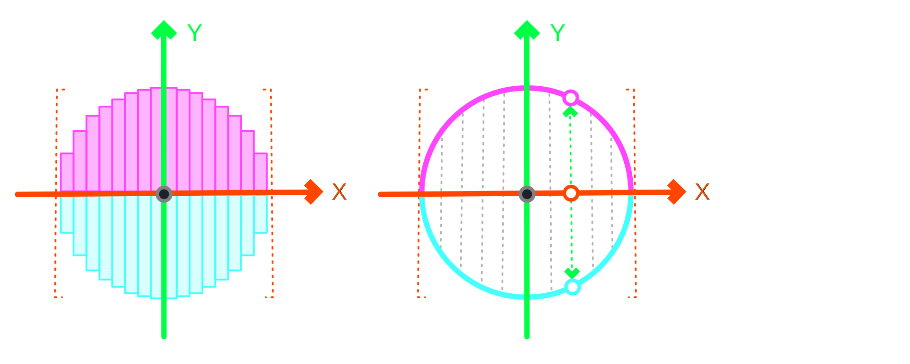
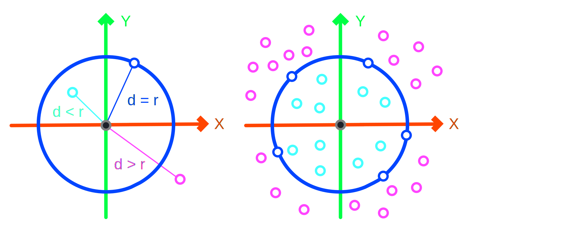
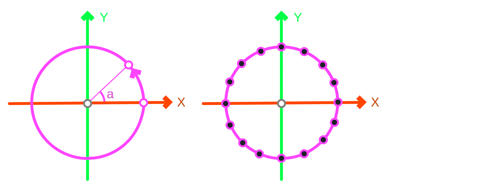
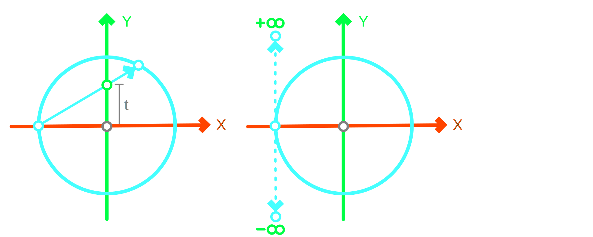
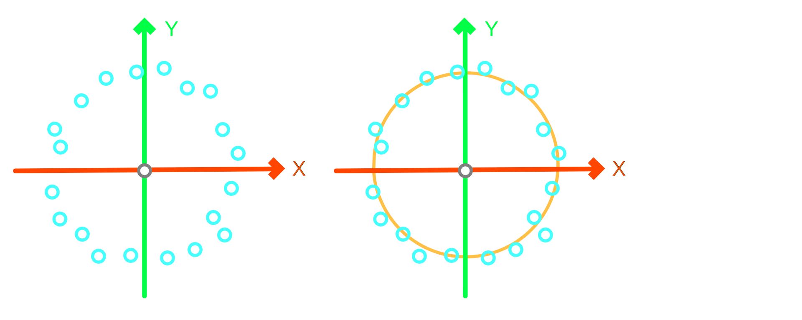
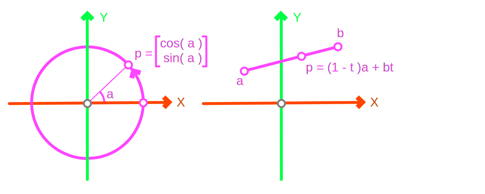
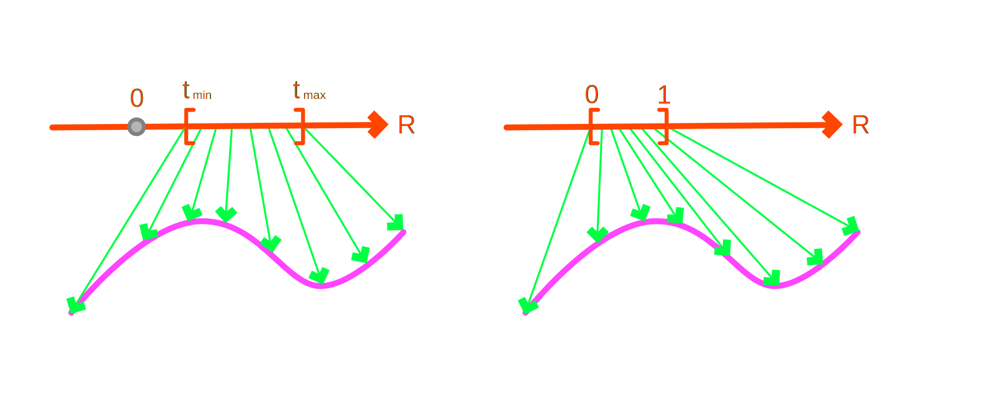

Curve Geometry
The objective of this section is to introduce concepts associated with planar and spatial curves. There are three very important operations related to surfaces:
- Evaluation: Forward mapping from R → R3, that is
t → [x, y, z]. - Derivatives: Geometric properties associated with differential concepts.
- Projection: Inverse mapping from R3 → R, that is
[x, y, z] → t.
Representations
There are several ways to represent curves even for the same underlying geometry. The unit circle for instance can be expressed in at least four different ways. These formulas represent the same shape but offer different intuition and tools for operating with them.
- Explicit y = ±sqrt( 1 - x2 ), where -1 ≤ x ≤ 1
- Implicit x2 + y2 = 1, where x, y : R
- Parametric [ x, y ] = [ cos( a ), sin( a ) ], where 0 ≤ a < 2π
- Rational [ x, y ] = [ ( 1 - t2 ) / ( 1 + t2 ), 2t / ( 1 + t2 ) ], where t : R
- Empirical [[x1, y1], [x2, y2], ..., [xn, yn]], where x, y : R
Explicit
The explicit form describes the unit circle in the sense of a bar graph expressing the height, or by how much we need to move up and down along the Y-axis, as we move along the X-axis. Curves of the f( x ) = y form often suffer from the geometric intuition perspective. The unit circle for instance has two ±parts instead of just one. While the range of valid values for x is well-defined [-1, 1], values outside of it are problematic. However, a nice property of this form is that it is trivially computable y = lambda x : math.sqrt( 1 - x * x ).

Implicit
The implicit form describes the constraints we need to adhere to for being exactly on the circle. We are free to choose any point in the plane, expressed by their coordinates x and y, as long as the point's square distance from the origin is exactly one. This can be trivially transformed to computation IsPointOnCircle = lambda x, y: abs( x * x + y * y - 1 ) <= e-17. It also implies that points where x2 + y2 > 1 are outside the circle while x2 + y2 < 1 are inside the circle. Therefore, we can interpret it as a recipe for circle containment testing.

Parametric
The parametric form describes the motion of a point around the circle, as if it was drawn by a compass or a person walking around it. It provides a handle for tracking the progress made, associated with the angle a between the X-axis and radial direction. The angle a is notionally bounded to [0, 2π) but even if we go out of bounds, say -π or 4π, we are still on the circle. In that sense it does enforce a constraint on the motion. It is also trivially computable using the expression PointOnCircle = lambda angle: ( math.cos( a ), math.sin( a ) ).

Rational
The rational form describes the point of intersection between a line from [-1, 0] and a point on the circle [x, y] with the Y-axis at [0, t]. The geometric intuition is unusual but constructive. It is rational in that it describes points on a circle based only on division of polynomials, that is without transcendental functions. The parameter t can take any real value but the point [-1, 0] can only be reached when t becomes infinite. Computationally it is also trivial to encode as PointOnCircle = lambda t : ( ( 1 - t * t ) / ( 1 + t * t ), 2 * t / ( 1 + t * t ) ) and efficient because it only requires basic arithmetic. However, floating point numbers have finite precision so the accuracy is not equal for every point on the circle.

Empirical
Measuring physical objects results into collections of data points used for fitting analytical shapes. This is performed via either interpolation, where a curve passes through the data points or approximation, where the curve passes as close as possible about the data points. Curve fitting is performed via statistical error minimization methods such as regression.The need for regression is because there are often more than enough data points but also because of the need to account for the errors present in the data, due to their empirical measurement sourcing.

Operations
Generally parametric forms are preferred in computational geometry because they allow for a unified approach in accessing some important properties of curves, namely addressing consecutive points, computing tangent vectors and coordinate systems along them.
Evaluation
Provided with a parametric curve C( t ), a point p on the curve is evaluated by p = C( t ), where t is the common way to name the parameter along the curve. Note that depending on the curve, p can be 2D as is p = [x, y] or 3D as in p = [x, y, z]. For instance, a unit circle in the XY-plane is C( t ) = [cos( t ), sin( t )] and a line between points a = [xa, ya, za] and b = [xb, yb, zb] is C( t ) = a * ( 1 - t ) + b * t.

In Rhino the Curve interface, which most curves comply with, captures the notion of a point-on-curve via the PointAt( ) method.
""" Various Curves
"""
curve = Line(
Point3d( xa, ya, za ),
Point3d( xb, yb, zb ) )
curve = Circle(
Point3d( xc, yc, 0.0 ), 1.0 )
curve = NurbsCurve.Create( False, 2,
[Point3d( xa, ya, za ),
Point3d( xb, yb, zb ),
Point3d( xc, yc, zc )] )
""" The PointAt Method
"""
point = curve.PointAt( t )
Domain
The range of allowed values for a curve's parameter t is known as the curve's domain. Domains are specified by using intervals such as [-1, 1], [0, +oo) and R or in general [min, max].
For parametric curves, it is common to use the unit domain [0, 1]. Using the same unit domain for every curve is convenient because we don't need to store the [min, max] values. Therefore, unless otherwise specified, the domain of a parametric curve can be assumed as [0, 1]. The unit domain conceptually can be interpreted as a percentage or time of travel along the curve.

Explicitly specifying the domain of a curve offers the ability to express bounded curves. This is useful because notionally curves do not have a start and an end point. By using domains their start and end points become the minimum and maximum parameters of their domains. This approach captures the concept of a curve segment as a part of an unbounded curve, for instance a linear segment or circular arc are bounded versions of a line and a circle, respectively.
Parameterization
Changing the domain of curve from one range to another is also known as reparameterization. The two most popular domains we may wish to adopt are: (a) the unit range [0, 1] and (b) the arc-length range [0, s], where s expresses the distance traveled.
For example, the circle C( a ) = r[cos( a ), sin( a )] with radius r is parameterized by angle a in [0, 2π]. Its perimeter is 2πr, therefore C( s ) = r[cos( a/r ), sin( a/r )] is parameterized by arc-length s in [0, 2πr]. In the same sense we can use the unit domain, where the circle C( t ) = r[cos( 2πt ), sin( 2πt )] is defined with t in [0, 1].
Note that it is almost never as easy to reparameterize arbitrary curves. The use of arc-length parameterization is useful for performing mathematical operations because it gets rid of square roots involved in length computations. The unit range is typically used for most computational geometry curves.
In Rhino a curve's domain can be accessed using the Domain property. The returned value is an Interval which contains the Min and Max values. Note that curve domains are read-only.
""" Curve Domain
"""
curve = Circle(
Point3d( xc, yc, 0.0 ), 1.0 )
print( curve.Domain )
t_min = curve.Domain.Min
t_max = curve.Domain.Max
print( t_min, t_max )
Points on Curve
Evaluating a number of consecutive points along a curve often uses the idiom seen below. The index and count values are translated into a unit-range parameter index / ( count - 1 ), before PointAt( ) is called. However, this only works for curves with unit domain [0, 1].
""" Normalized Parameters
"""
us = [index / ( count - 1 )
for index in range( count )]
""" Points on Normalized Curve
"""
points [curve.PointAt( u )
for u in us]
The proper way to map parameters from the unit-range onto the curve's domain requires a form of interpolation such as linear interpolation as seen below.
""" Normalized Parameters
"""
us = [index / ( count - 1 )
for index in range( count )]
""" Parameters in Curve's Domain
"""
ts = [( curve.Domain.Min * ( 1 - u ) +
curve.Domain.Max * ( u ) )
for u in us]
""" Points on Curve's Domain
"""
points [curve.PointAt( t )
for t in ts]
The Interval object provides a couple of useful methods namely ParameterAt( ) which converts parameters from the unit-range onto the curve's domain, exactly seen earlier, and NormalizedParameterAt( ) which does the opposite conversions, namely from a domain value to a unit-range value.
""" Normalized Parameters
"""
us = [index / ( count - 1 )
for index in range( count )]
""" Parameters in Curve's Domain (shortcut)
"""
ts = [curve.ParameterAt( u )
for u in us]
""" Points on Curve's Domain
"""
points [curve.PointAt( t )
for t in ts]
Note that curves provide the DivideByCount( ) method which can be used as a shortcut to perform the operation presented above. Additionally, for evaluating points using arc-length parameterization, the PointAtLength( ) method can be used.
""" Parameters in Curve's Domain (shortcut)
"""
ts = curve.DividedByCount( count - 1, True )
""" Points on Curve's Domain
"""
points [curve.PointAt( t )
for t in ts]
Curve Length
Length is measured within a domain interval [a, b] along a curve C( t ). The mathematical expression involves derivatives and integrals, namely ∫[a, b]|C'( t )|dt which expands to ∫[a, b]sqrt( ( dx / dt ) ** 2 + ( dy / dt ) ** 2 + ( dz / dt )** 2 ) dt. For a few curves this can be computed analytically, that is we can actually derive a closed-form solution, but for most, an approximation can be used Σ[a, b] |C( t + dt ) - C( t )|.
Geometrically this expression states that the length along a curve can be computed by the sum of many small linear segments. The code below demonstrates how to approximate a curve's length step by step trying to be as close to the definition above.
""" Normalized Parameters
"""
us = [index / ( count - 1 )
for index in range( count )]
""" Parameters in [a, b]
"""
ts = [a * ( 1 - u ) + b * u
for u in us]
""" Points on Curve
"""
points = [curve.PointAt( t )
for t in ts]
""" Segment Vectors
"""
vectors = [( b - a )
for a, b in zip( points[:-1], points[1:] )]
""" Vector Lengths
"""
lengths = [vector.Length
for vector in vectors]
""" Curve Length
"""
length = sum( lengths )
Rhino provides the GetLength( ) method which computes a curve's length. Without parameters is computes the length of the entire curve, while by passing an Interval can be used for computing the length as shown above.
""" Curve Length
"""
curve = Circle( Point3d.Origin, 1.0 )
""" Full Circle
"""
length = curve.GetLength( )
""" Half Circle
"""
length = curve.GetLength( Interval( 0.0, math.pi ) )
Derivatives
Tangent
The derivatives of parametric curves C( t ) = p convey very important geometric properties. The first derivative C'( t ) = U represents the tangent vector T = U / |U| at parameter t. The tangent vector is associated with a line { p, T } that best-fits the curve locally. The length of the first derivative |U| captures how the curve's length changes over t, which is close to the notion of speed in physics.
The tangent never becomes the zero vector, for curves that are continuous and not degenerate in some sense, such as a line defined by the same two points. However, is some cases it may yield two different directions, based on the side t is approached. This is common for curves, that are not continuously differentiable in the sense that they contain cusp points.
A derivative can be approximately computed by evaluating two nearby points and computing the tangent vectors as seen below.
""" Finite dt
"""
dt = 1e-5
""" C( t ) and C( t + dt )
"""
p = curve.PointAt( t )
q = curve.PointAt( t + dt )
""" Finite Tangent C'( t )
"""
U = ( q - p ) / dt
The exact derivative requires limits, where dt → 0. Nevertheless, the above approximation, also known as a finite difference, demonstrates that derivatives of curves are type-wise vectors since they involved subtraction between points. If we do not care about the length of the derivative, it is best to not divide by a small number but instead just normalize the vector.
""" Finite Unit Tangent
"""
T = ( curve.PointAt( t + dt ) -
curve.PointAt( t ) )
T.Unitize( )
In Rhino tangent vectors can be computed analytically using the TangentAt( ) method provided by the Curve interface, where t is the parameter in the curve's domain. Note however that the TangentAt( ) method returns a normalized vector, therefore the speed content is missing.
""" Exact Unit Tangent
"""
p = curve.PointAt( t )
T = curve.TangentAt( t )
Normal
The second derivative of a curve C''( t ) = V is associated with the normal vector computed as N = U x V x U / |U x V x U| of the curve at parameter t. The normal is orthogonal to the tangent T · N = 0 and represents the direction of projection N onto the curve at point C( t ) in the sense of a perpendicular line { p, N }.
Semantically, the second derivative C''( t ) captures the rate by which a curve is changing direction or bending. This is also associated with a circle that best-fits the curve locally known as the circle of curvature. The circle's radius r is associated the concept of the curvature defined as κ = 1 / r at parameter t.The circle's center is located at c = p + N / κ. The curvature at every point along a curve can be computed using κ = |U x V| / |U| ** 3.
The second derivative is not always well-defined. This does not only include the cases presented regarding the behavior of the tangent but also simpler cases such as a line for instance. Also, the normal vanishes at points where the curve flips direction, also known as points of inflection.
Rhino does not provide a NormalAt( ) but instead a CurvatureAt( ) method. It returns a vector with the same direction as the normal and length equal to the curvature at t.
""" Curvature Vector
"""
u = curve.CurvatureAt( t )
""" Curvature
"""
κ = u.Length
""" Normal Vector
"""
N = Vector3d( u )
N.Unitize( )
Alternatively, the DerivativeAt( ) can used, where the first argument is the parameter t along the curve and the second is the number of desired derivatives. Note that the result is a collection of vectors so some conversions are required.
""" Computing Derivatives
"""
D = curve.DerivativeAt( t, 2 )
p, U, V = Point3d( D[0] ), D[1], D[2]
""" Tangent Vector
"""
T = Vector3d( U )
T.Unitize( )
""" Normal Vector
"""
UxV = Vector3d.CrossProduct( U, V )
N = Vector3d.CrossProduct( UxV, U )
N.Unitize( )
""" Curvature
"""
κ = UxV.Length / ( U.Length ** 3 )
Binormal
The binormal vector B of a curve at parameter t is associated with the third derivative of the curve C'''( t ) = W but usually computed as B = U x V / |U x V|. It is orthogonal to both the tangent and the normal vectors B = T × N. The third derivative geometrically captures the rate by which the curve is twisting along its length. This quantity also known as torsion τ can be computed using τ = ( U × V ) · W / ( U × V ) ** 2.
""" Computing Derivatives
"""
D = curve.DerivativeAt( t, 3 )
p, U, V, W = Point3d( D[0] ), D[1], D[2], D[3]
""" Binormal
"""
UxV = Vector3d.CrossProduct( U, V )
B = UxV / UxV.Length
""" Torsion
"""
τ = ( UxV * W ) / ( UxV * UxV )
""" Shortcut
"""
τ = curve.TorsionAt( t )
Frame
The three derivatives along a curve form a coordinate system known as the Frenet-Serret frame. More commonly, the Frenet-Serret frame's origin is associated with the point, the X-axis with the tangent T, the Y-axis with the normal N, and the Z-axis with the binormal B, at parameter t. Because of this association, it is also often known as the TNB frame.
Rhino provides the FrameAt( ) method for computing coordinate systems along curves.
""" Curve Frame
"""
plane = curve.FrameAt( t )
""" Associated Vectors
"""
p = plane.Origin
T = plane.XAxis
N = plane.YAxis
B = plane.ZAxis
Projection
Projection, also known as finding the closest point from any point p onto a curve C requires finding a point q such that the direction u = q - p is orthogonal to the curve at q. This is also equivalent of finding the parameter t such that the line defined by the point C( t ) = q and the normal N( t ) = u passes through point p. This is because the normal direction is orthogonal to the curve by definition. Projection of points on simple curves, such as lines and circles, can be computed analytically. For more complex curves it requires numerical computation.
In Rhino, curves implement the ClosestPoint( ) method, which accepts the point to project and return the parameter of the curve.
""" Curve Closest Point
"""
p = Point3d( px, py, pz )
t = curve.ClosestPoint( p )
q = curve.PointAt( t )